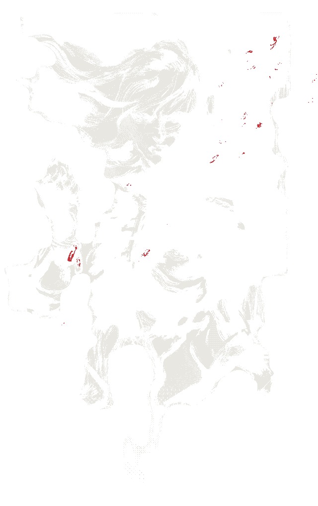

Teaching robots to move, and to see.
Hector Lugo — MS Computer Science at UTRGV. Reinforcement learning, computer vision, and vision-language models for robotics.
Get in touch →Selected work
Three projects, then the rest in a list.
-

VLM + RL · MuJoCo · Qwen3-VL · PPO
VLM-Guided Legged Robot Navigation with Revisable Memory
A frozen Qwen3-VL navigator steers a PPO locomotion policy (Go2/G1, MuJoCo). I designed a revisable belief memory for out-of-view target search that drops stale beliefs on contradiction, with memoryless and frame-history ablations.
-

PPO · Gymnasium · FastAPI · WebSockets
Poker RL
A MaskablePPO self-play agent trained against a pool of frozen policy snapshots in RLCard 6-max No-Limit Hold'em, evaluated in mbb/hand with 95% CIs. Served as a real-time browser poker table over FastAPI + WebSockets, with CI and tests.
-

YOLO11 · ByteTrack · Docker · Computer Vision
FlowCount — Real-Time Traffic Analytics
YOLO11 detections feed a ByteTrack-style tracker (Kalman filter + Hungarian matching) for line counts, wrong-way alerts, zone occupancy, and heatmaps from webcam, video, or RTSP input. Web dashboard, Docker deploy, CI.
- 04
RL Isaac Lab Framework
A reinforcement-learning framework built on Isaac Lab for robotic simulation and training — multi-agent systems and legged locomotion in physics-based environments, with LocoMuJoCo for imitation and benchmarking.
- 05
Signal Denoising — Idaho National Lab
A ResNet autoencoder denoises noisy smart-grid sensor signals for anomaly detection, with signal preprocessing and parallel computing that cut training time by over 93% (30 days → 1–2 days).
- 06
Senior AE Project — RL Compression
Reinforcement learning for neural-network compression — efficient deployment in resource-constrained environments and the impact of compression on RL performance.
- 07
Summer REU — Railway Systems
Summer 2023 at UC Riverside — spectral clustering applied to USDOT railway crossing accident records, published at ASME JRC 2024.
- 08
Personalized Chemotherapy Dosing
A Decision Transformer learns personalized dosing from offline patient data — treatment planning framed as offline RL, published at ICICT 2025.
- 09
Neon Grid
A walkable ASCII cyberpunk city in a single HTML file — a first-person raycaster with no engine, no libraries, no assets.
- 10
Chess-AlphaGO
AlphaZero-style self-play for Gardner chess (5×5) built on Pgx — batched, JIT-compiled rollouts on GPU with JAX and MCTS via Gumbel MuZero.
Research & publications
Research assistant at the Machine Intelligence Lab, UTRGV, January 2023 to August 2026: hierarchical control for legged robots, with a VLM navigator commanding RL locomotion policies (Unitree Go2, G1 humanoid); Isaac Sim and MuJoCo environments and PPO locomotion and navigation policies for the Unitree Go2, including state autoencoders that cut compute cost and sped up training. Summer 2026 at the Air Force Research Laboratory: an open-sourced evaluation harness for multi-camera video QA — 650K+ scored answers across 3 benchmarks and 2 vision-language models (Qwen2.5-VL, InternVL3) on a multi-GPU SLURM cluster — with a manuscript in preparation.
- IEEE ICMLA 2026
Vision–Language Guided Quadruped Navigation with RL Control · accepted
- ICICT 2025
Personalized Chemotherapy Dosing Through Offline Reinforcement Learning · first author
- ICICT 2025
Offline Reinforcement Learning Approaches for Safe and Effective Smart Grid Control
- ASME JRC 2024
Spectral Clustering in Railway Crossing Accidents Analysis · code
About, in person
I'm Hector, a CS master's student at UTRGV. I work on getting robots to move and to understand what they're looking at: reinforcement learning for legged locomotion, computer vision, and vision-language models for navigation.
A walled courtyard with a gate, seen in first person and drawn in ASCII, rendered live by Neon Grid.
Neon Grid — my ASCII raycaster, running live, live
This summer I was an AI/ML research intern at the Air Force Research Laboratory, studying how vision-language models handle multi-camera video. The short version: when does it actually help to fuse camera feeds, and when does it not. I'm continuing that work with AFRL past the internship. Back at school I built RL pipelines in LocoMuJoCo and NVIDIA Isaac Sim and trained locomotion policies meant to survive contact with real hardware.
Raiden trained for the real thing entirely in VR. My agents do the same — policies learned in simulation, then carried across the sim-to-real gap.
yes, that's why Raiden's up there
When I'm not training agents, I train myself: Taekwondo and hiking, slowly working up to summiting a real mountain.
Résumé ↗